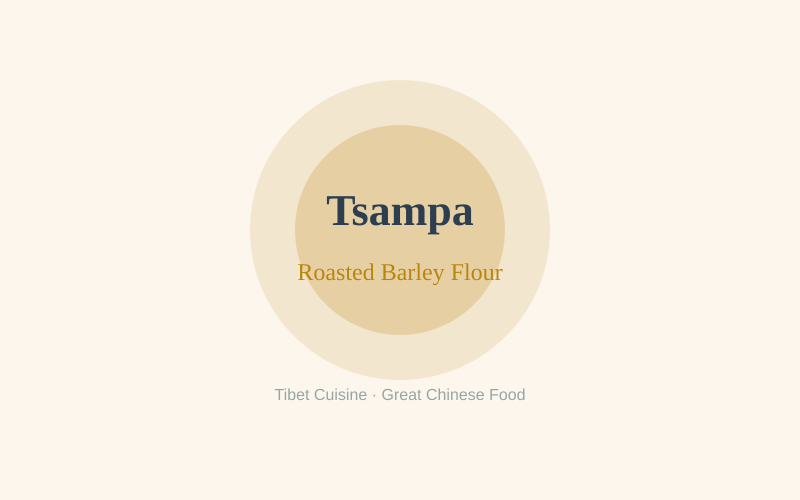
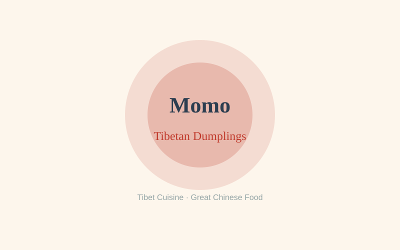
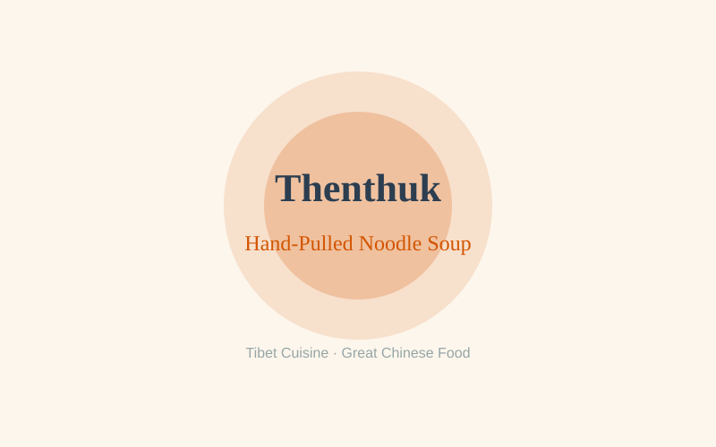
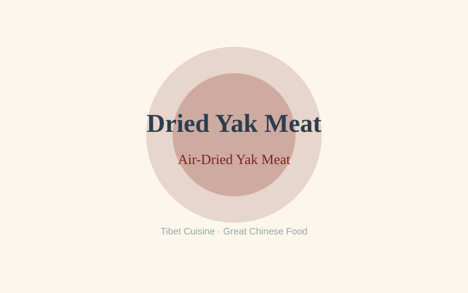

Tibet Cuisine — Regional Food Guide
A comprehensive guide to the authentic flavors, signature dishes, and culinary traditions of Tibet.
Signature Dishes of Tibet

Tsampa (Roasted Barley Flour)
Tsampa is the foundation of Tibetan cuisine — roasted highland barley, or qingke, ground into a fine, nutty flour. To make it, barley grains are first washed and stir-fried in hot sand until they puff and turn golden, then milled into a powder that keeps for months without spoiling. At the table, a handful of tsampa is kneaded in a wooden bowl with a splash of yak butter tea (or plain tea), sometimes with a spoonful of sugar or crumbled dried cheese (chura), and worked with the fingers into a dense, pliable dough that is rolled into small balls and eaten. The flavor is earthy, faintly sweet, and deeply satisfying. For centuries tsampa has been the staple that fueled Tibetan nomads, monks, and caravan travelers across the plateau — portable, energy-dense, and needing no fire to prepare. It is so central to identity that "eating tsampa" is nearly synonymous with being Tibetan. It appears at every meal, is the first thing offered to a guest, and travels in a leather pouch on a nomad's saddle, a humble but sacred symbol of Tibetan life and hospitality.

Momo (Tibetan Dumplings)
Momo are Tibet's beloved steamed dumplings, a delicious legacy of the plateau's centuries of trade with Nepal and the Himalaya. The filling is traditionally yak meat, finely minced and mixed with onion, garlic, ginger, cilantro, and a pinch of Sichuan pepper for warmth; vegetarian versions swap in potato, soft cheese (churu), or cabbage. A thin, supple dough is rolled into small rounds, filled, and pleated into neat crescents or round purses, then steamed over boiling water until tender and juicy. The result is a mouthful of fragrant, savory filling wrapped in a delicate skin. Momo entered Tibet along the caravan routes that linked Lhasa with Kathmandu, and over time the Nepali original adapted to the plateau's yak meat and colder climate, becoming a fixture of Tibetan home cooking. Today they are served by the steaming basketful in teahouses, street stalls, and family kitchens, always with a fiery tomato-chili chutney (sepen) for dipping. They are the comfort food of the plateau — shared communally, devoured at Losar (Tibetan New Year), and the perfect warming snack on a cold high-altitude afternoon.

Thenthuk (Hand-Pulled Noodle Soup)
Thenthuk is the soul-warming noodle soup of Tibet, named for the way its dough is "pulled" (then) into "noodle" (thuk). A simple dough of wheat flour and water is kneaded, then stretched and torn by hand into flat, irregular ribbons that are dropped directly into a simmering broth. The broth itself is a generous one-pot affair: yak meat or mutton browned with ginger and scallions, then simmered with daikon radish, tomatoes, spinach or other hardy greens, and a fragrant touch of Sichuan pepper. The hand-torn noodles drink up the rich broth while staying pleasingly chewy. Thenthuk is a sturdy winter staple, born of nomadic and farming households that needed a warming, filling meal from whatever the season offered; long regarded as humble "poor man's food," it is elevated by the generosity of its portions. It is served in deep bowls in family kitchens, roadside teahouses, and even monastery soup kitchens, and is the classic restorative after a long journey, an illness, or a day of hard work at altitude. Diners slurp the chewy noodles and savory broth together, often with a side of tsampa, letting the heat chase away the highland chill.

Dried Yak Meat (Air-Dried Yak Meat)
Air-dried yak meat is Tibet's time-honored method of preserving the plateau's most important animal. Lean strips of yak are cut with the grain, rubbed with salt and sometimes Sichuan pepper or dried chili, and hung to air-dry in the cold, bone-dry, high-altitude air for weeks — sometimes months — until they turn dense, dark, and concentrated in flavor. No heat is used; the plateau's own thin, arid air and biting cold do the work, drawing out moisture while the meat slowly cures into a chewy, intensely savory jerky. On a plateau where fresh meat could not be stored and where the yak was the source of food, fuel, wool, and transport, drying was a matter of survival: it sustained nomads through long winters, and provisioned pilgrims, traders, and herders on journeys of many days. It is eaten as a chewy snack, sliced paper-thin and nibbled slowly alongside butter tea, or shredded into soups and stir-fries to add depth. A pouch of dried yak meat is a prized gift, carried by travelers as portable sustenance — a vivid, delicious emblem of the self-sufficient, resilient life of the Tibetan plateau.
Food Culture of Tibet
Tibetan cuisine is shaped above all by the extreme altitude of the plateau — much of it lies above 3,500 meters, where the air is thin, the growing season short, and arable land scarce. The diet is built on two pillars: highland barley and the yak. Barley becomes tsampa, the daily staple, while the yak supplies meat, milk, butter, cheese, and yogurt. Seasonings are simple — salt, Sichuan pepper, and occasionally chili — letting the clean, high-altitude flavors speak for themselves. The defining drink is yak butter tea (po cha), a savory blend of black tea, yak butter, and salt, churned together and sipped throughout the day; it is both nourishment and the universal gesture of welcome. Tibetan Buddhism also shapes the table deeply: many families observe vegetarian days, food is offered at monasteries, and meals are communal and generous, with tea endlessly refilled and guests urged to eat until satisfied. The cuisine is unpretentious, high-energy, and perfectly adapted to life on the roof of the world — a food culture of survival, faith, and warm hospitality.